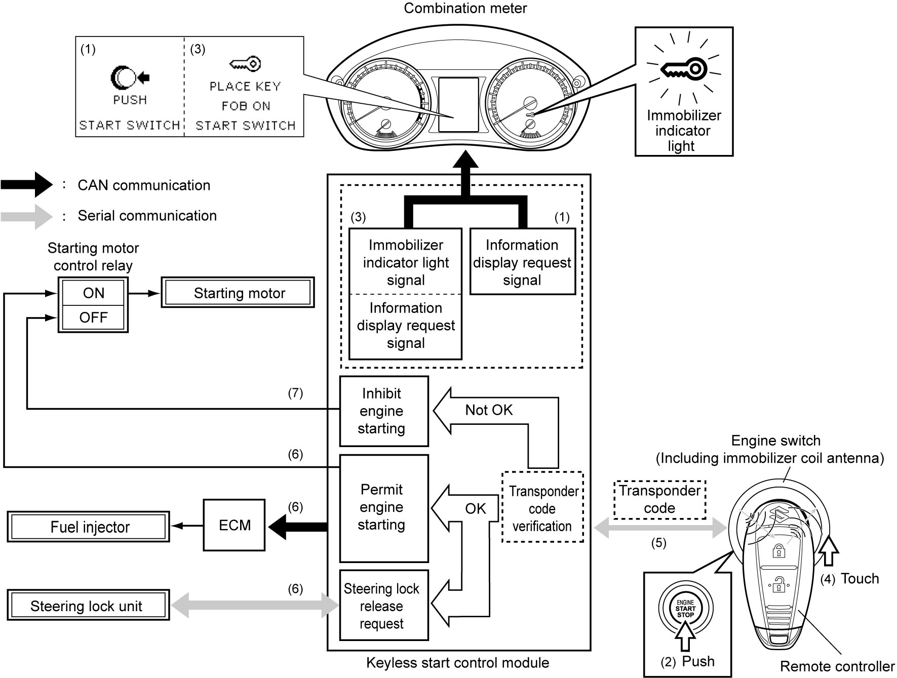

10C
| Description of Engine Starting Procedure |
In the case that remote controller battery is flat, there is system trouble, and/or the keyless push start system is disabled, engine starting procedure is as follows.
1)When depressing clutch pedal (M/T model) or depressing brake pedal with shift position P or N (A/T model / twin clutch system model), the keyless start control module outputs an information display request signal (“PUSH START SWITCH”) through CAN communication.
2)Push engine switch.
3)Keyless start control module outputs an immobilizer indicator light signal and an information display request signal (“PLACE KEY FOB ON START SWITCH”) through CAN communication.
4)Place remote controller on the engine switch for about 2 seconds while information display indicates “PLACE KEY FOB ON START SWITCH”.
5)Keyless start control module reads transponder code of remote controller through immobilizer coil antenna equipped in engine switch.
6)The starting motor control relay turns ON and the starting motor starts, a steering lock release request is output to the steering lock unit through serial communication, and a message is sent to the ECM to permit engine starting only when transponder code corresponds with the registered code.
7)When transponder code does not correspond with the registered code, keyless start control module does not turn on the starting motor control relay to inhibit the starting motor operation.


 "Expand image")